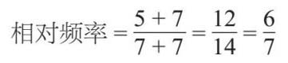

在前面的例子中，我们把所有可能的结果计算出来，并用相关理论计算了概率。然而，在许多情况下，这是不可能做到的。如果你问我今天喝咖啡的概率是多少，我可以告诉你，我喝咖啡的概率很高，甚至可以估算出一个数字。但是如果不事先收集一些数据，我是无法用数学方法计算出来的。
我可以把咖啡日记保存一周，然后用它来计算概率。比如，第一周我在7天内喝了5杯咖啡。根据这个记录可知，在任何一天我喝咖啡的概率是 。数学家称之为相对频率，表示它不是理论上推导的概率。我们必须假设每天喝咖啡的行为是独立的，我前一天喝了一杯咖啡，不会影响我今天喝咖啡的概率。
下一周我每天都喝了一杯咖啡。我现在的相对频率是：

总结起来就是，时间越久，相对频率就能越精确地代表我在任意一天喝咖啡的可能性。
为什么这个方法有用？因为，当赌徒计算赔率或准备下赌注时，他们通常要看最近的表现（情形），才能做决定。保险公司也是用类似的方法对客户进行分类，并确定投保风险。你越长时间不提出索赔，你提出索赔的相对频率就越低，因此客户对保险公司造成的风险就越小，缴纳的保费也就越低。
如果我掷一枚硬币，连续8次都是人头那面在上，许多人就会觉得这个世界出现了不明原因的失衡，他们开始认为下一次是反面的可能性会更大，而实际上硬币出现正反面的可能性是相同的。虽然连续8次人头朝上是不可能的（大约0.4%），但它的出现和其他连续投掷结果的概率也是相同的。
这就是赌徒谬论。1913年在蒙地卡罗大赌场发生了一起著名的事件。一个轮盘转动后，连续23次落在黑色区域中，这完全是偶然现象。事情一发生，消息便很快传开，人们在下一轮中把大笔资金押在红色区域中，因为人们认为这种情况更可能发生。
有些人在生孩子的时候也会犯同样的错误：人们会认为已经连续生了几个男孩，那么下一次更有可能生女孩，反之亦然。
检察官谬误错误地认为，在法庭案件中，事件发生的概率与被告有罪或无罪的概率在适当情况下是相同的。萨莉·克拉克（Sally Clark，1964—2007）是一名英国妇女，她被判谋杀了两个孩子，但两个孩子实际上都死于婴儿猝死综合征。发生这种情况的可能性被错误地计算为7 300万分之一，因为他们认为婴儿猝死综合征致死这个事件是独立的。但对于兄弟姐妹来说，它不是独立事件，因为可能有潜在的遗传因素在起作用。克拉克服了三年刑期之后才被改判为无罪。此外，还有许多类似的案件。
看来，统计数据出错是会产生非常严重的后果的。